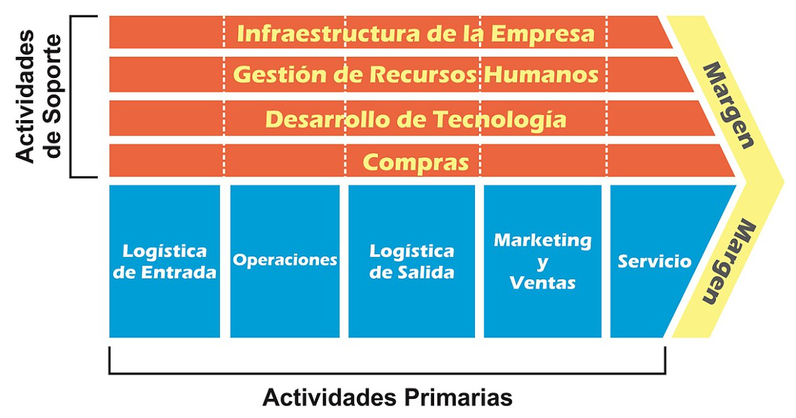
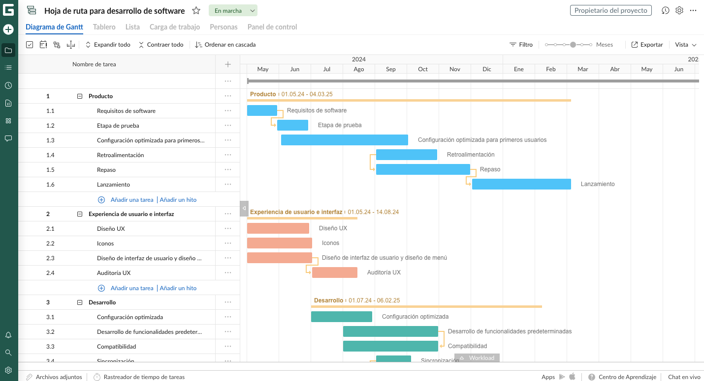

Unidad 6 Presupuesto y Control
Cátedra: Prof. Juan Pablo Cesarini
1. El Cimiento Estratégico: La Cadena de Valor de Porter
Para presupuestar con precisión, primero debemos "mapear" la organización. Michael Porter propone que cada actividad de la empresa debe agregar valor al cliente final.

2. El Presupuesto y el Tiempo
El Diagrama de Gantt es nuestra herramienta de presupuesto de tiempos. Un desvío aquí impacta directamente en los costos salariales.

3. Caso Práctico: Análisis Multiescenario
A continuación, comparamos los tres escenarios posibles para el proyecto Fintech:
ESCENARIO A: OPTIMISTA
| Rubro | USD |
|---|---|
| Ingresos | 14.000 |
| Salarios (Op.) | 4.800 |
| Licencias (Ap.) | 350 |
| Mkt y Ventas | 250 |
| CapEx | 2.500 |
| MARGEN NETO | 6.100 |
Obs: Entrega anticipada y descuentos por pago anual.
ESCENARIO B: BASE
| Rubro | USD |
|---|---|
| Ingresos | 12.000 |
| Salarios (Op.) | 6.100 |
| Licencias (Ap.) | 400 |
| Mkt y Ventas | 450 |
| CapEx | 2.500 |
| MARGEN NETO | 2.550 |
Obs: Cumplimiento estándar del plan de trabajo.
ESCENARIO C: PESIMISTA
| Rubro | USD |
|---|---|
| Ingresos | 10.500 |
| Salarios (Op.) | 7.500 |
| Licencias (Ap.) | 600 |
| Mkt y Ventas | 600 |
| CapEx | 2.800 |
| MARGEN NETO | -1.000 |
Obs: Penalidades por demora y suba de costos Cloud.
4. Control de Gestión y Análisis de Desvíos
Una vez que el proyecto inicia, el presupuesto se convierte en una herramienta de control activa. No buscamos "culpables", sino información estratégica para la toma de decisiones.
Desvío = Presupuestado - Real
Tipos de Desvíos
- Desvío en Precio: El costo por hora de un dev o una licencia aumentó por condiciones de mercado.
- Desvío en Eficiencia: El equipo utilizó 150 horas para una tarea que el Gantt estimaba en 100 horas.
Interpretación Analítica
Un desvío negativo recurrente en Operaciones puede indicar que la Cadena de Valor está mal calculada o que el Gantt fue demasiado ambicioso. El control nos permite ajustar el rumbo antes de que el margen desaparezca.